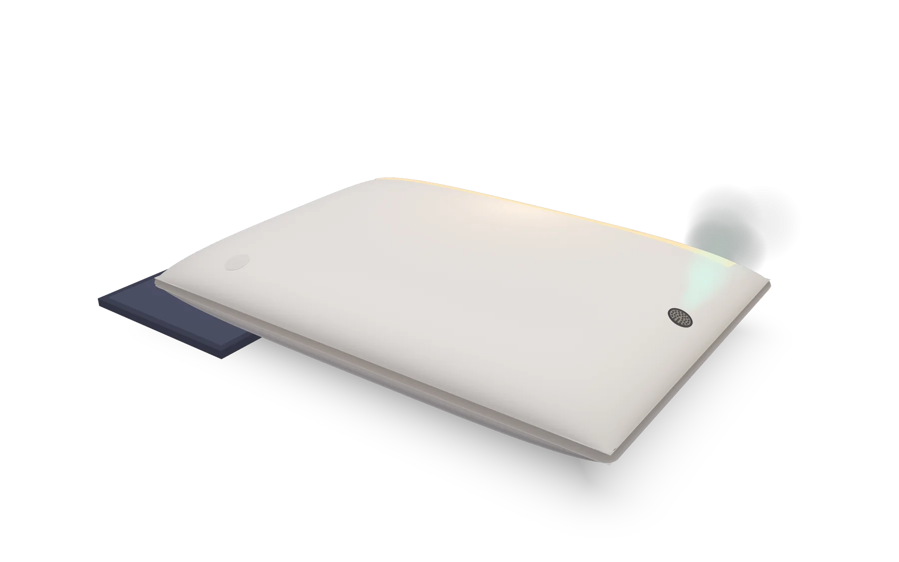
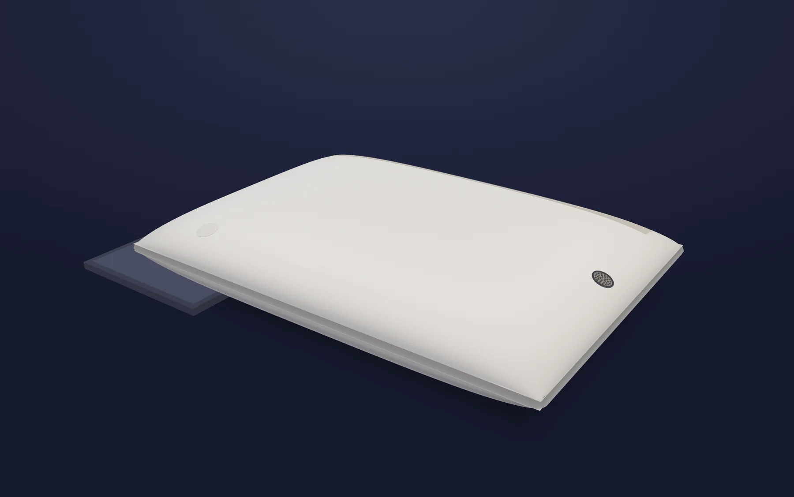
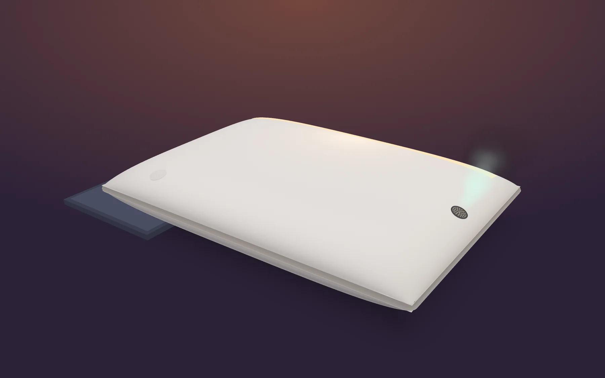
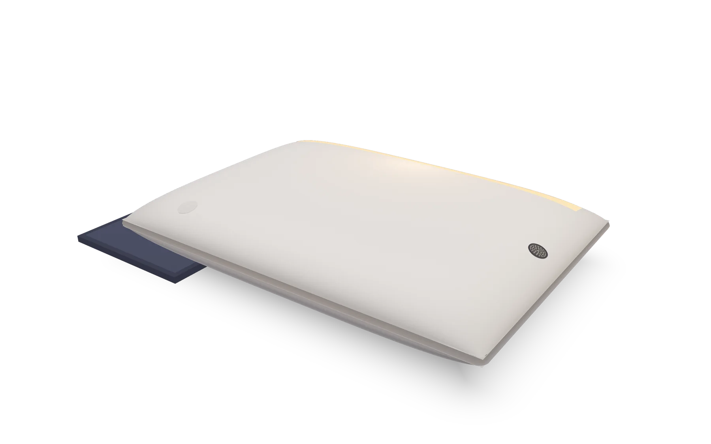
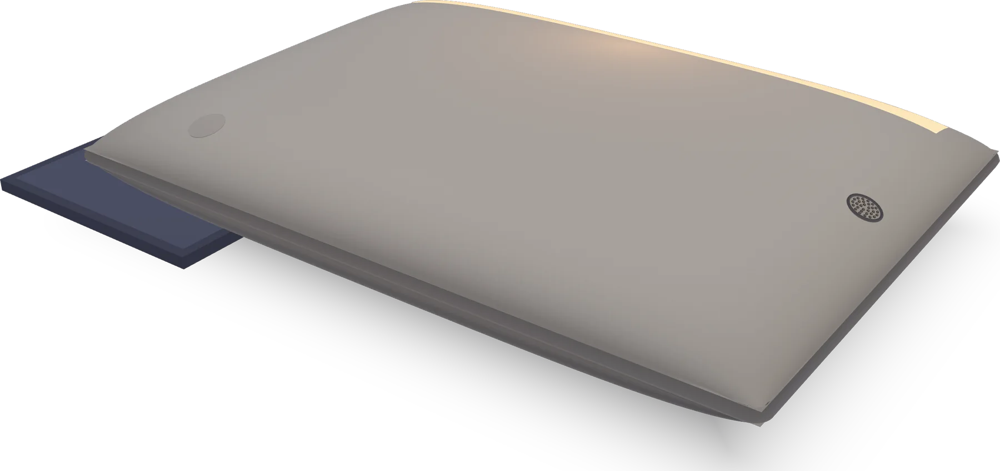
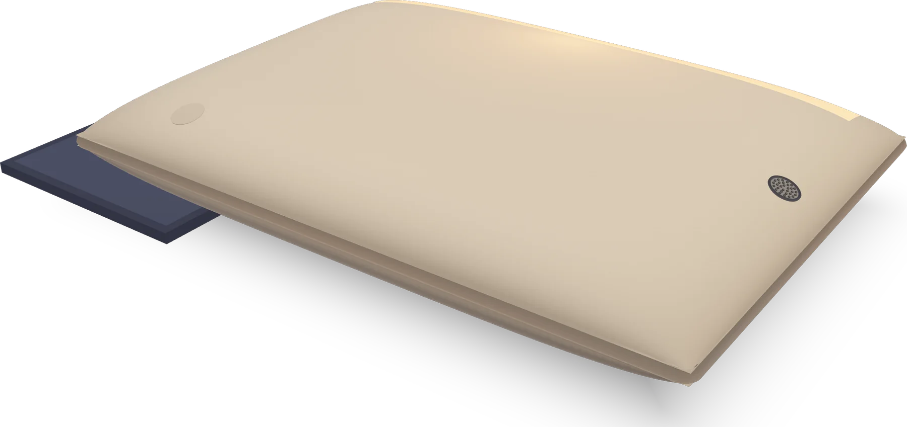

Proyecto de Emprendimiento · Un objeto cotidiano: la almohada Preventa (demostrativa) desde 149 USD*

−15Luz tenue−10Primeras ráfagas−5Brillo de amanecerAromaMenta o cítricoAuraSleepDespiertas
La alarma corta el sueño de golpe.
La mayoría de las personas se despierta con una alarma sonora. El sonido interrumpe el sueño aunque estemos en una fase profunda, y el cuerpo responde como ante un sobresalto: cansancio, irritabilidad y una “cabeza pesada” que puede durar varios minutos.
Despertar abrupto
El sonido interrumpe el sueño sin transición. Despertar desde el sueño profundo deja más torpeza y confusión, lo que se conoce como inercia del sueño; en su forma más marcada se llama despertar confusional.
Pico de estrés
El sobresalto activa la respuesta de estrés justo al iniciar el día.
Despierta a quien no lo necesita
En parejas o cuartos compartidos, la alarma de una persona interrumpe el sueño de la otra.
Dos formas de despertar
Arrastra la línea para comparar la misma mañana.

6:00
Con alarma

Con AuraSleep
El sonido corta el sueño de golpe, a la hora exacta.
El sobresalto dispara la respuesta de estrés.
Despierta también a quien duerme al lado.
La luz sube poco a poco durante 15 minutos.
Ráfagas cortas de menta o cítrico, dirigidas a la nariz.
Sin sonido: la otra persona sigue durmiendo.
Hay una alternativa mejor
92 %
Luz que simula el amanecer. Philips reporta que el 92 % de los usuarios de su Wake-up Light encuentra más fácil levantarse (estudio Metrixlab 2011, 209 personas). [6][7]
99 %
Aroma al despertar. En pruebas propias, SensorWake reportó que su alarma de aroma despertó al 99 % de las personas en dos minutos. Es un dato del fabricante; otros estudios sobre aromas como despertador han sido menos positivos. [8][9]
Menta y estrés. Toda y Morimoto observaron reducciones significativas del cortisol en saliva al exponer a participantes al aroma de menta. [10]
La hipótesis de que luz + aroma juntos funcionan mejor que cada uno por separado debe comprobarse con pruebas en personas.
Quince minutos de amanecer, dentro de tu almohada.
AuraSleep sustituye la alarma sonora por un despertar secuencial y multisensorial. Trabaja de forma no invasiva sobre la vía visual indirecta (luz que atraviesa los párpados cerrados) y la vía olfativa (aroma dirigido a la nariz).
para tu hora
Sigue bajando: el tren avanza por la línea
−15−10−5Hora
La calibración exacta (cuánta luz, cuánto aroma y cada cuánto) se ajusta según el perfil del usuario.
Luz
En el borde superior de la funda hay una cinta textil con fibras ópticas de 0.25 mm, alimentada por un pequeño LED de tono cálido. Unos 15 minutos antes de la hora programada, la luz sube despacio hasta un brillo tenue que atraviesa los párpados. No es una lámpara que te apunta a la cara.
Aroma
En un lateral, a la altura de la nariz, un difusor del tamaño de una moneda con una microbomba silenciosa libera ráfagas cortas de menta o cítrico, dirigidas a la nariz y sin llenar la habitación.
Control
Se programa la hora en una app por Bluetooth de bajo consumo. También hay un botón táctil capacitivo oculto bajo el textil.
Ahorro de energía
Un sensor de presión en la espuma solo activa el sistema si hay una cabeza apoyada.
Energía
Batería de 4 V y 1200–1500 mAh para varios despertares por carga, recargada por inducción: sin cables ni conectores expuestos.
Mantenimiento
Funda exterior lavable; el cartucho de aroma y el módulo LED son reemplazables. Sin pantallas ni altavoces: el equipo concluyó que interrumpen el descanso.
Por fuera, una almohada. Por dentro, un amanecer.
Almohada de unos 48 × 68 cm, con perfil ergonómico de 13 cm al centro y 10 cm en los bordes. Las fibras ópticas no se ven como cables: van en una costura del borde superior y, apagadas, se sienten como una cinta textil mate. El difusor queda escondido en el lateral y la electrónica en una bolsita interna de malla acolchada.

Arrastra para girar · Ctrl + rueda para acercar
Plano
Funda
Perspectiva: la almohada con su base de carga por inducción, el botón táctil oculto y el difusor en el lateral.
48 × 68 cm
de almohada, con perfil ergonómico
13 cm
de alto al centro y 10 cm en los bordes
0.25 mm
cada fibra óptica de la cinta de luz
1200–1500 mAh
de batería, con carga por inducción
Ficha técnica
Medidas y peso
48 × 68 cm · perfil de 13 cm al centro y 10 cm en los bordes · 0.9 a 1.1 kg
Funda
Algodón peinado o mezcla con bambú, lavable
Núcleo
Espuma viscoelástica de densidad media con la electrónica protegida
Luz
Cinta textil de fibra óptica PMMA de 0.25 mm + LED cálido con disipador pasivo
Aroma
Microbomba de diafragma de menos de 100 mW + cartucho de 10–15 mL de aceite de grado cosmético
Electrónica
Bluetooth de bajo consumo, sensor de presión, gestión de batería, botón táctil capacitivo oculto
Energía
Batería de 4 V y 1200–1500 mAh · carga por inducción
Sin
Pantallas, altavoces ni cables expuestos
Qué incluye la caja
Almohada AuraSleep con funda lavable
Base de carga por inducción
Primer cartucho de aroma (menta o cítrico)
Manual
Las piezas ya existen. La unión, no.
Lo innovador es la unión híbrida: un sistema que despierta con luz y aroma en una secuencia calibrada, dentro de la propia almohada. La innovación está en la experiencia de despertar.
LuzLámparas de amanecer
AromaDespertadores de aroma
AuraSleeplas dos, en tu almohada
Comparación de AuraSleep con soluciones actuales
Solución actual
Qué hace
Qué le falta
Lámparas de amanecer Philips Wake-up Light, desde 2006
Simulan el amanecer con luz
Solo luz; ocupan la mesita de noche
Despertadores de aroma SensorWake, 2014
Liberan un aroma a la hora de la alarma
Solo aroma; es un aparato aparte
Almohadas inteligentes actuales
Monitorean el sueño, reducen ronquidos o ajustan la altura
No se encargan del despertar
AuraSleep
Luz de amanecer + aroma focalizado en la misma secuencia, dentro de la almohada
—
Difícil de copiar
La ventaja real no está en comprar las piezas, sino en calibrar la secuencia (intensidad de luz, cantidad de aroma, frecuencia y distancia al rostro) según el perfil de cada usuario. Eso exige pruebas con personas y datos acumulados.
Ingresos recurrentes
Los cartuchos de aroma generan ventas cada trimestre, no solo la venta única de la almohada.
Integración
El usuario no compra ni acomoda otro aparato; solo programa la hora.
En la búsqueda que hicimos no encontramos un producto comercial que combine luz de amanecer y aroma focalizado dentro de la almohada. Antes de lanzar habría que hacer una búsqueda formal de patentes.
Para quién es.
Usuario principal
Adultos de 22 a 45 años con vida urbana y trabajo o estudios exigentes que ya invierten en bienestar; parejas que comparten habitación.
Su rendimiento por la mañana depende de cómo despiertan; la alarma silenciosa no despierta a la pareja.
Segundo grupo
Personas con estrés matutino, cansancio al despertar o despertar confusional; usuarios de lámparas de amanecer.
No exige disciplina ni cambios de rutina: solo programar la hora. Integra la luz en la cama, sin ocupar la mesita.
Canales a mediano plazo
Hoteles boutique, clínicas del sueño, coworkings con zonas de descanso, programas de bienestar corporativo.
Experiencia diferenciadora para huéspedes, pacientes y empleados; compras por volumen.
Tres colores de funda.
Funda de algodón peinado o mezcla con bambú, lavable, en Blanco roto, Gris piedra y Beige cálido.


Blanco roto
Premium, pero accesible.
Por encima de una almohada ergonómica convencional y por debajo de las almohadas inteligentes de gama alta.
Almohada AuraSleep
164USD
Precio de referencia en la web · lanzamiento de 149 a 179 USD*
Está pensada para un despertar gradual; la calibración de luz y aroma se ajusta a cada persona. Como es un concepto, esto debe probarse con usuarios.
¿El aroma llena el cuarto?
No. Son ráfagas cortas dirigidas a la nariz, desde un difusor del tamaño de una moneda.
¿Se puede lavar?
La funda exterior sí. La electrónica va en una bolsita interna protegida.
¿Tiene cables?
No. Se carga por inducción en su base.
¿Despierta a mi pareja?
No hace ruido, y la luz y el aroma se dirigen a quien está apoyado en la almohada.
¿Qué pasa si no hay nadie acostado?
El sensor de presión no activa el sistema, así ahorra batería.
¿Puedo usarla sin celular?
Sí, con el botón táctil oculto bajo el textil.
¿Y si soy sensible a los aromas?
Es un riesgo que el equipo identificó; los aromas cerca del rostro requieren pruebas de seguridad y alergias antes de lanzar.
Innovadora, viable y comercial.
AuraSleep usa componentes que ya existen, cuesta menos de lo que se vende y suma un ingreso recurrente con los cartuchos. Lo único que cambia es lo más importante: cómo empieza tu día.